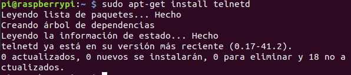
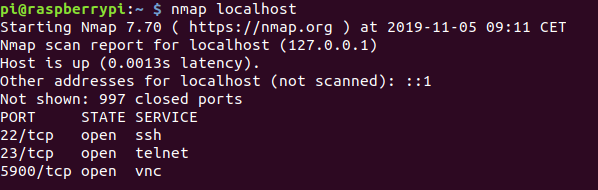
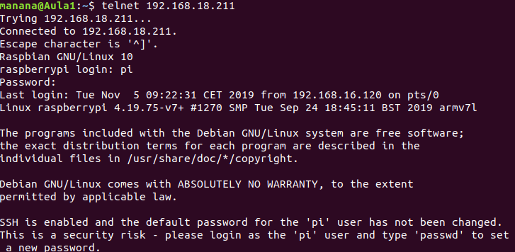
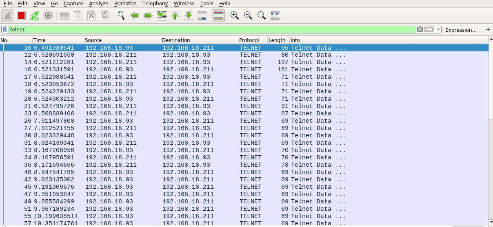
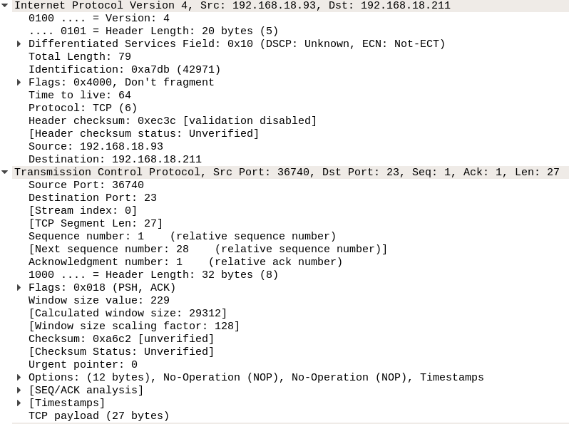
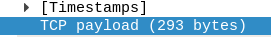
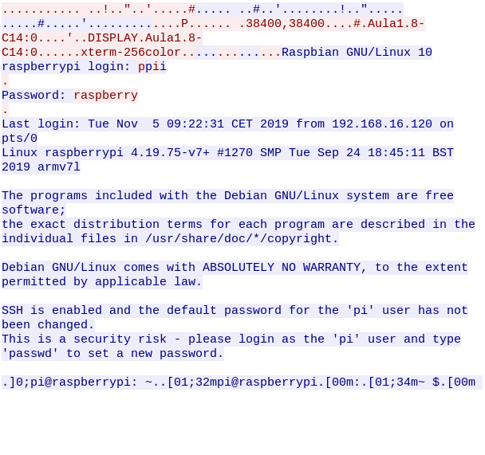
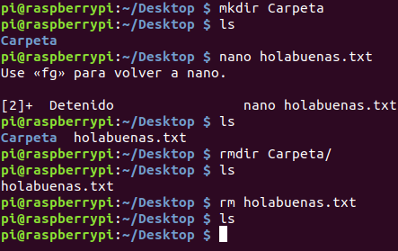

Telnet
A continuación veremos como instalar un servidor Telnet en una Rasperry Pi.
Yo me conecté por ssh ha mi Rasperry, peo se puede también hacer por VNC o desde la misma Rasperry. Bien, lo primero que debemos hacer es un "sudo apt update", y seguido de eso, debemos instalar Telnet. Debemos de poner el siguiente comando "sudo apt-get install telnetd", en mi caso, ya lo tenía instalado, y por eso sale así, en vuestro lugar, comenzará la instalación.
Después de la instalación, hacemos un "nmap localhost" para comprobar que
esté instalado correctamente.

Una vez conseguido esto, debemos lanraz Wireshark, en mi caso, no tenía
los permisos necesarios, y lo lancé con sudo "sudo wireshark", en el caso de que
no lo tengas instalado, simplemente, haz "sudo apt install wireshark" Seguido a
esto, nos conectamos desde una terminal nueva a nuestra Rasperry por telnet para
generar tráfico que podamos atrapar con niestro wireshark, lo haremos con, en mi
caso "telnet 192.168.18.211", donde esa IP es la IP de nuestra Rasperry.

Una vez generado el tráfico necesario, nos saldrá en wireshark algo
parecido a esto.

Para mostrar la infomación de capas, simplemente abrimos el "menú" de la
capa deseada y miramos.

En mi caso, el tamaño de la capa es 293bytes.

Como es lógico, nuestro login y contraseña, viajan en texto plano, como se
muestra aquí.

Ahora vamos a crear en nuestra Raspberry mediante SSH, un directorio, con
"mkdir ejemplo", y un arcivo de texto, para después borrarlos con "rmdir" para
el directorio y "rm" para el archivo de texto.
